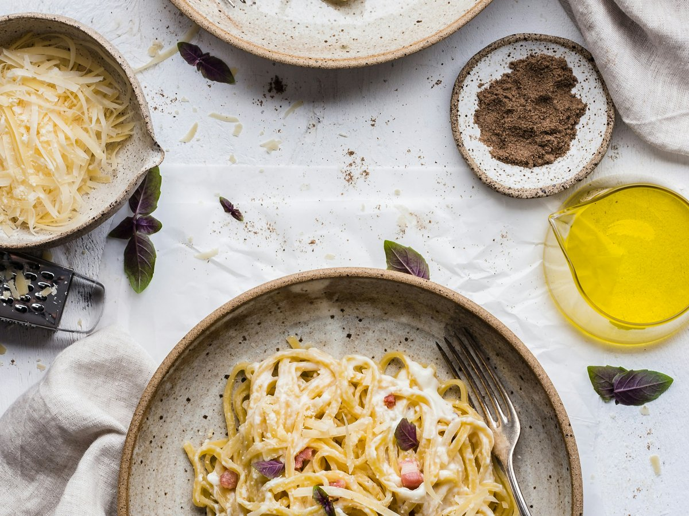

← Toutes les recettes
Pâtes à la carbonara
Une recette simple et savoureuse, classique italien.

Ingrédients
- Spaghetti ou pâtes de votre choix200 g
- Lardons ou pancetta150 g
- Œufs entiers2
- Jaune d'oeuf supplémentaire1
- Parmesan râpé50 g
- Selau goût
- Poivre noirau goût
- Huile d'olive (facultatif)un peu
Étapes
- Faire cuire les pâtes dans une grande casserole d'eau bouillante salée selon les instructions du paquet.
- Pendant ce temps, faire revenir les lardons dans une poêle à feu moyen jusqu'à ce qu'ils soient bien dorés (sans ajouter de matière grasse si les lardons sont assez gras).
- Dans un bol, battre les œufs avec le jaune supplémentaire, ajouter le parmesan râpé, du poivre noir généreusement moulu, et bien mélanger.
- Quand les pâtes sont cuites al dente, les égoutter en réservant une tasse d'eau de cuisson.
- Retirer la poêle du feu, ajouter les pâtes chaudes aux lardons, mélanger rapidement, puis verser le mélange œufs-parmesan.
- Remuer vigoureusement pour que les œufs cuisent avec la chaleur des pâtes sans faire d'omelette. Si c'est trop épais, ajouter un peu d'eau de cuisson réservée pour obtenir une sauce crémeuse.
- Servir immédiatement avec un peu de parmesan supplémentaire si désiré.